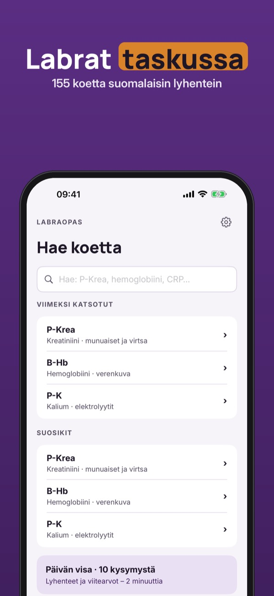
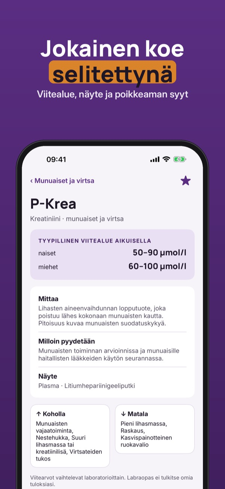
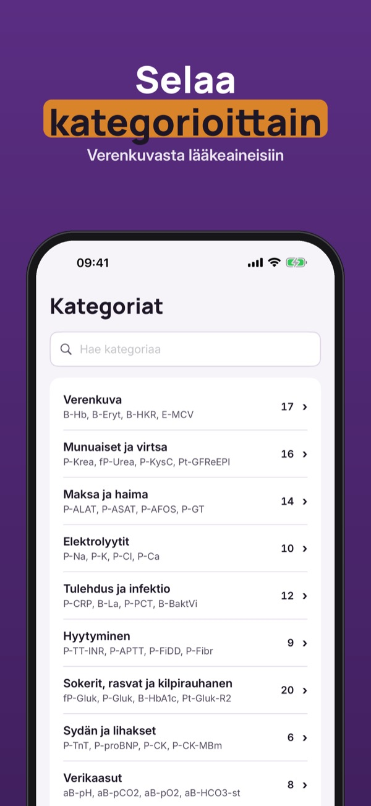

Viitearvot, lyhenteet ja visa



Labraopas on hakuteos hoitotyön ja lääketieteen opiskelijoille sekä sairaanhoitajille: 155 laboratoriokoetta suomalaisin lyhentein (P-Krea, B-Hb, fP-Gluk).
30 yleisintä koetta, lyhenneavain, yksiköt ja yksi viiden kysymyksen visa päivässä ovat käytössä ilman ostoa. Täysi versio on kertaosto, joka avaa kaikki 155 koetta, rajattomat visat ja virheiden kertauksen, rajattomat suosikit sekä näyteputket ja ottojärjestyksen. Ei tilausta.
Labraopas on itsenäinen opiskelun hakuteos. Se ei tulkitse omia tuloksiasi eikä korvaa lääkärin arviota. Viitearvot vaihtelevat laboratorioittain – tarkista aina oman laboratoriosi arvot. Viitevälit, näytteet ja putket on koottu Fimlabin julkisesta tutkimusohjekirjasta, ja jokaisen koekortin lähde näkyy sovelluksessa. Ei yhteyttä mihinkään laboratorioon.
Terms of Use (EULA): https://www.apple.com/legal/internet-services/itunes/dev/stdeula/
Privacy: https://baytechbv.github.io/privacy/labraopas-fi/